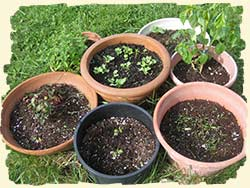

Nutrition
Meals and snacks are prepared in accordance with Canada's Food Guide. I strive to provide as much organic, whole grain, and unprocessed foods as I can. The children help to grow our garden and harvest the bounty. They also enjoy participating in the preparation of meals and baking their own snacks.
Children are never forced to eat, but they are required to sit at the table for a short period of time. They are also encouraged to try one or two bites of the foods offered. We have a sit down lunch every day, sometimes picnicking outdoors in warmer weather.
Sample menu
| AM Snack | Lunch | PM Snack | |
|---|---|---|---|
| Monday | pineapple sunrise shake water | tomato soup grilled cheese sandwich cucumber slices milk | fruit salad graham cracker milk |
| Tuesday | corn muffin milk | vegetable beef stew whole grain crackers applesauce milk | veggies cucumber dip pita triangles orange juice |
| Wednesday | vanilla yogurt blueberries water | mac and cheese wheat roll spinach salad apple slices milk | home-made pudding orange juice |
| Thursday | oat cereal banana milk | chicken green beans wheat roll canned peaches milk | vegetable juice cheese cubes high fiber crackers |
| Friday | cottage cheese fresh fruit water | pita pizza veggies ranch dip orange wedges milk | bran and blueberry
muffin milk |